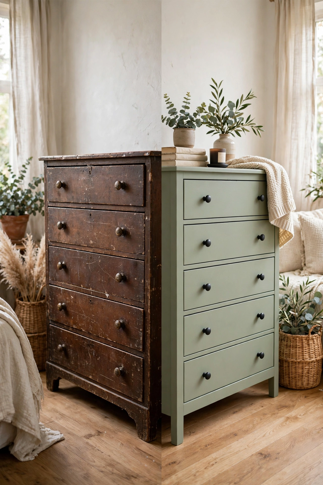

Furniture Flips Thrift Flips
Thrifted Dresser Flip: Before and After (Under $40)

I found this solid wood dresser at a thrift store for $15. It was scratched and dated, but the drawers worked. Two days later it looks new. This is the exact process I used.
What you need
- Thrifted wood dresser, solid wood if possible
- 120 and 220 grit sandpaper
- Chalk paint, 1 quart, matte white or sage
- Clear wax or polycrylic topcoat
- New knobs, 6 pack
- Paintbrush, foam roller, screwdriver, tack cloth
Steps
- Clean and remove hardware. Wash with warm soapy water, let dry, remove all knobs and drawer pulls.
- Sand lightly. Sand the top with 120 grit, then the whole piece with 220 grit. You are not stripping it bare, just giving paint something to grip. Wipe with a tack cloth.
- Paint coat 1. Thin coat of chalk paint with a brush, then roll flat areas. Let dry 2 hours.
- Paint coat 2. Second thin coat. Two thin coats beat one thick coat and stop peeling.
- Seal it. Two coats of polycrylic on the top, one coat elsewhere. This is the step most people skip.
- Add knobs. New matte black or brass knobs change the whole look for about $12.
Why chalk paint peels
Peeling usually means the surface was shiny, dirty, or the paint was too thick. Sand lightly, clean well, and seal the top. If paint still lifts, use a bonding primer first.
Cost breakdown
Dresser $15, paint $12, knobs $12, topcoat $8, sandpaper $5. Total $52 if you buy everything new, $32 if you already have paint and topcoat at home.
Pin this: Thrifted Dresser Flip Before and After Under $40